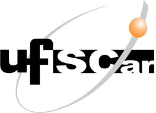
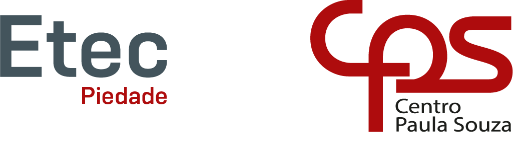

Mestrado em Sistemas de Informação Geográfica e Ordenamento de Território (set. 2024 - o momento)
Disciplinas relevantes: Cartografia e Sistemas de Informação Geográfica, Aquisição e Edição de Dados Geográficos,
Detecção Remota aplicada ao Ordenamento do Território, Base de Dados Relacionais, Instrumentos de Planeamento e Ordenamento do Território,
Análise Espacial aplicada ao Ordenamento do Território, Programação em Sistemas de Informação Geográfica e Ordenamento do Território,
Cartografia dos Riscos, Riscos e Proteção Civil e Planeamento, Prospectiva e Gestão Territorial.
Curso de Licenciatura em Geografia (mar. 2019 - mar. 2024)

Disciplinas relevantes: Cartografia Temática, Geografia Física, Geografia Humana, Geotecnologias, Geomorfologia,
Geografia Urbana e Regional, Planejamento Urbano e Regional, Economia Regional e Urbana, Climatologia, Hidrogeografia,
Meio Ambiente e Desenvolvimento Sustentável, Geoestatística, Geografia da População, Geopolítica, Pedologia,
Gestão de Recursos Naturais.
Trabalho de Conclusão de Curso: Intitulado como "Elevação do Nível do Mar: Análise de cenários para as praias de
Guaratuba e Itaguaré em Bertioga - SP", a pesquisa focou em mudanças climáticas e planejamento urbano costeiro,
utilizando coleta de dados morfodinâmicos de campo e modelagem para prever o impacto da elevação do Nível Médio do Mar (NMM).
O trabalho forneceu projeções críticas de inundações até 2100, essenciais para subsidiar planos de adaptação e
gestão de risco municipal na zona costeira, com destaque para a ameaça de inundações de 4,68 m em áreas residenciais.
Ensino Médio Integrado ao Técnico em Meio Ambiente (fev. 2015 - dez. 2017)

O curso tem base em duas disciplinas principais: biologia e química. A primeira, para aprender sobre a diversidade da vida,
compreensão de ecossistema, as relações entre os seres vivos e ciclo da matéria no ambiente.
A segunda, para compreensão de métodos de separação de matéria. Também envolve interpretação de texto
para entender normas técnicas, resoluções, portarias e decretos, além de aulas direcionadas a
equipamentos de laboratórios, coletas padronizadas, poluição atmosférica e mudanças climáticas (CPS, 2025).
Por fim (e não menos importante), a integração com o currículo paulista do ensino médio.
Aluna Especial de Mestrado em Ciência da Informação Geográfica (mar. 2024 - jun. 2024)
Propósito: Aprofundar conhecimentos teóricos e práticos em Sistemas de Informação Geográfica (SIG),
com foco na aplicação de técnicas de geoprocessamento e análise espacial em contextos socioambientais.
Bolsista do Programa de Residência Pedagógica (PRP) (out. 2022 - fev. 2024)

Propósito: Fortalecer a formação docente por meio da imersão prática em escolas públicas,
promovendo a integração entre teoria e prática pedagógica na área de Geografia. O programa visa aprimorar as habilidades de ensino,
estimular a reflexão crítica sobre práticas educativas e contribuir para a melhoria da qualidade do ensino nas instituições parceiras.
Bolsista do Programa Institucional de Iniciação à Docencia (PIBID) (out. 2020 - mar. 2022)
Propósito: Atuar de forma colaborativa no desenvolvimento de projetos educacionais que integrem o ensino geográfico a práticas reflexivas e
transformadoras, promovendo o protagonismo estudantil e a construção de identidades através de atividades como Mapas Narrativos
que articulam o espaço, o indivíduo e a sociedade.
Cofundadora do Projeto "Refugiados Sírios na região de Sorocaba" (jul. 2020 - out. 2021)
Propósito: Promover reflexões e discussões sobre as condições de vida e saúde de refugiados no contexto da pandemia da COVID-19,
compreendendo-as enquanto expressões das desigualdades espaciais. Como cofundadora do
Grupo de Estudos Refugiados e os Territórios Desiguais (GERTD/UFSCar), busquei articular a pesquisa
geográfica e o debate social, explorando o cotidiano como espaço de resistência, adaptação e construção de
novas territorialidades.